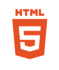

Nav Rotation Reveal
Use the nav buttons to find the nav links, and then use those links to find me!
Some Skills of Mine




Use the nav buttons to find the nav links, and then use those links to find me!